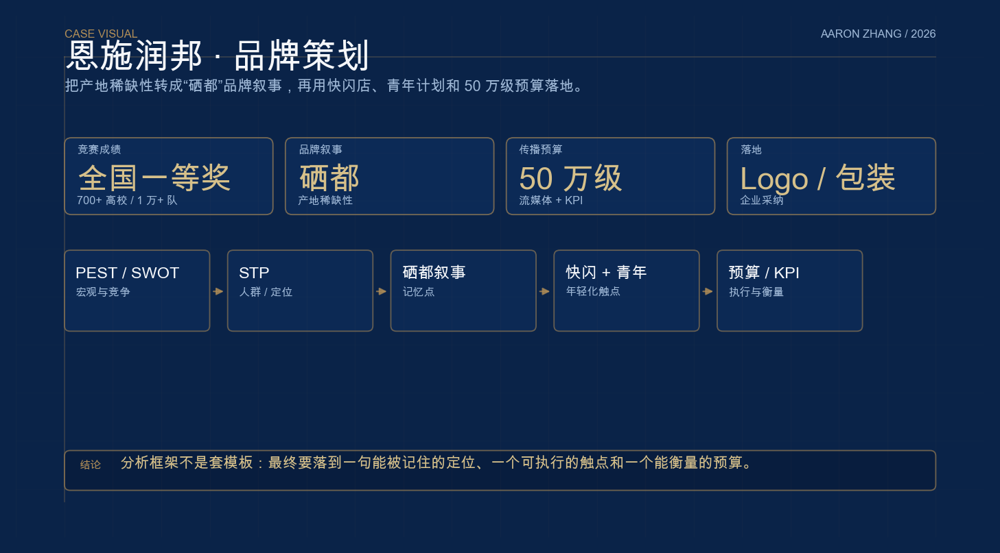

品牌策划赛 · 恩施润邦茶业
用 PEST / SWOT / 波特五力 / STP 做竞争分析，提出「硒都」品牌叙事，最终获全国一等奖，方案被企业采纳。
| 项目 |
全国高校商业精英挑战赛 · 品牌策划赛 · 全国一等奖 |
| 时间 |
2025.01 – 2025.08 |
| 角色 |
核心组员 · 调研 / 品牌定位 / 传播策划 |
| 关键词 |
PEST SWOT STP 品牌叙事 |
背景 / Context
恩施润邦茶业有不错的产地资源，但品牌辨识度不强，年轻消费者对「恩施硒茶」的认知有限。
团队要回答三个问题：
- 恩施茶的核心差异点是什么？
- 应该面向谁讲这个故事？
- 用什么内容、渠道和预算，把故事讲出去？
我的工作 / What I did
- 实地调研：前往恩施润邦茶业，对接企业负责人，了解产品、渠道和品牌现状。
- 竞争分析：运用 PEST、SWOT、波特五力、CAMP-S 完成竞争分析与 STP 品牌定位。
- 品牌叙事：创新提出 「硒都」 品牌叙事，把产地稀缺性转成消费者能听懂的记忆点。
- 年轻化策划：策划「茶叶快闪店」「硒力青年计划」，拓展 Z 世代受众。
- 传播预算：制定 50 万元级流媒体宣传预算与 KPI 体系。
- 落地跟进：新品牌 Logo 与包装设计方案被企业实际采纳落地。
结果 / Impact
- 全国一等奖：全国 700 余所高校、1 万余支队伍参赛。
- 新品牌 Logo 与包装设计方案被企业实际采纳落地。
- 把「产地优势」转成「品牌叙事 + 年轻化触点 + 可执行预算」的完整方案。
关键数据 / Key Numbers
| 指标 |
数值 |
口径 |
| 竞赛成绩 |
全国一等奖 |
全国高校商业精英挑战赛 · 品牌策划赛 |
| 参赛规模 |
700+ 高校 / 1 万+ 队伍 |
公开赛事口径 |
| 传播预算 |
50 万元级 |
流媒体宣传 + KPI |
| 落地 |
Logo / 包装方案 |
企业实际采纳 |

图：从 PEST/SWOT、STP、硒都叙事、快闪/青年计划到预算与 KPI 的策略链路。
结论 / Takeaways
- 产地优势不会自动变成品牌：要把“恩施硒茶”翻译成消费者能记住的“硒都”叙事，才形成差异点。
- 定位之后要有触点：快闪店和“硒力青年计划”把品牌从一句口号变成可体验的内容。
- 方案要能落地：50 万级预算、KPI 和 Logo/包装落地，比只讲品牌理念更能证明策略有效。
可迁移的能力 / What it shows
- 从调研到策略：分析框架不是套模板，最终要落到定位和行动。
- 品牌叙事：把专业术语翻译成消费者语言。
- 落地意识：方案不只停在 PPT，Logo 和包装真正被企业采用。
说明：该项目为学科竞赛。以上仅展示公开的比赛结果和方法，不包含企业未公开的经营数据。